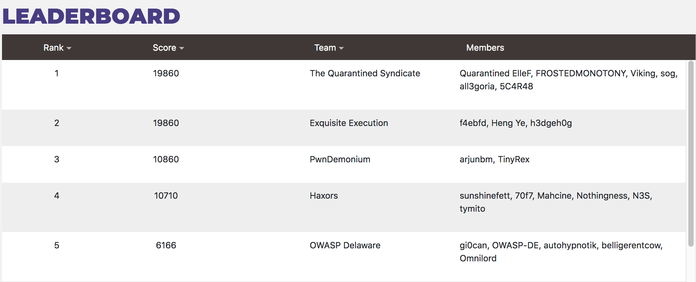

Digiexchange Team Invitational Writeup
Writeup:
With the first team invitational by Security Innovation coming to an end, we decided to detail our experiences in a writeup. It was a challenging range, but our teamwork and persistence paid off and we conquered the range in 8 hours and 44 minutes to capture the gold. Greetz to the team members participating: 5C4R48, ElleF, All3goria, sogonsec, FROSTEDMONOTONY, and Viking. Final scores will be posted at the bottom
The rules were simple:
- No hints from SI staff
- Teams must consist of at least 2 members and no more than 6 members
- To compensate for larger teams, the score of each team member is averaged for the team score
- No prebuilt automated tools like knoxss, burp spider, sqlmap, etc
Going into the event we knew communication and active participation were going to be key. To coordinate effectively we set up a discord server with a voice channel for fast transfer of information and 2 text channels: Solutions and Work. The solutions channel was only used for flags, scoring payloads, and writeups of the trickier challenges. All speculative payloads, notes, and other ramblings during the event were contained to the work channel.
Knowing the strengths of our team played a big role in our time. 5C4R48 is adept at binary exploitation so he was tasked with any binaries that we encountered. Sogonsec was the strongest programmer on the team so he had priority on any scripting based challenges. ElleF, All3goria, and FROSTEDMONOTONY were all web app specialists so they focused on the main application. Viking is adept at crypto so he was tasked with the cryptography analysis.
We were asked by Security innovation not to post any solutions so we will go over general methodologies that helped us instead:
- When beginning a web app, always check robots.txt /admin /administrator /debug and /administration. You almost always will find something juicy. For challenges that allow tools we recommend dirbuster/gobuster/wfuzz combined with a wordlist of sensitive pages.
- When you encounter a hash outside of a database, there are only a few variables it could be in any given situation. Try hashing various combinations of variables related to where you found it to create a match.
- Sometimes XSS filters are almost perfect. The keyword being almost. We had instances where we tried over 30 different payloads against an input field without any feedback that would indicate XSS. The 31st payload triggered an alert.
- Always read the source. We found multiple challenges hidden in the source. Some more subtle than others.
- Scripting skills are very useful. Either build your own up or have a teammate that can quickly and effectively script.
- Remember to have fun. It is a game.
Now for the feedback section. Security Innovation did a lot of things very well and could work on a few things as well.
Pros:
- The team aspect. The sizing of our team was perfect. 6 members allowed us to cover a lot of ground very quickly as well as have very different viewpoints on challenges. This also kept things entertaining during the lull between scoring.
- There was a great variety of challenges ranging from very easy to enragingly fickle.
- A wide variety of challenge categories. We enjoyed that challenges varied from XSS to SQLI to crypto to binary exploitation. It allowed a diverse talent pool to really shine.
- The try harder mentality of this event really made it feel competitive. The other events were very much a group hug style which, while still fun, is less exciting for some people.
Cons:
- The binary exploitation challenges could be ramped up in difficulty a bit. The first few were mutations of each other without any added difficulty.
- A bit more varied SQLI challenges would be great. The SQLI was a bit homogenous in this range.
All in all this was a great event and we had a great time. Keep up the good work Chad and the rest of SI and we will see you at the next one!
Final Scores (Top 5):

- The Quarantined Syndicate (19860 pts)
- Exquisite Execution (19860 pts)
- Pwndemonium (10860 pts)
- Haxors (10710 pts)
- OWASP Delaware (6166 pts)